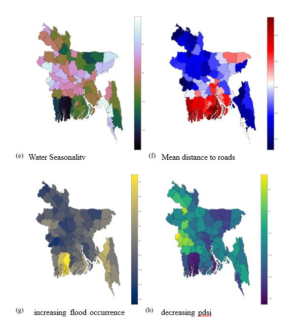

Wavelet Decomposed Short Term Daily Precipitation Forecasting Using Artificial Neural Networks in Khulna, Bangladesh
Develops station-based daily precipitation forecasting models for Khulna by combining wavelet decomposition, lagged meteorological inputs and artificial neural networks. The study also examines rainfall trends, persistence and extreme-event return periods.
Study area
Khulna District, Bangladesh
Data
BMD daily rainfall (1985–2019) and MERRA-2
Spatial coverage
5 rain-gauge stations
0.66–0.73
Reported KGE range
2.639–12.12 mm
Reported MAE range
5 stations
Forecast evaluation

Modeling Agricultural Vulnerability to Climate Stress: A Spatially-Explicit Assessment of Inland and Coastal Areas
Assesses spatial and temporal disparities in agricultural production and yield across Bangladesh, examining inequality, spatial clustering, convergence and the climatic, environmental and infrastructural drivers of yield variation.
Study area
Inland and coastal districts of Bangladesh
Study period
2012–2024
Project context
URP 4124 · Group 02 · KUET
0.76
CatBoost R²
−0.30 t/ha
Estimated salinity effect on yield
β = −0.1614
Yield convergence coefficient